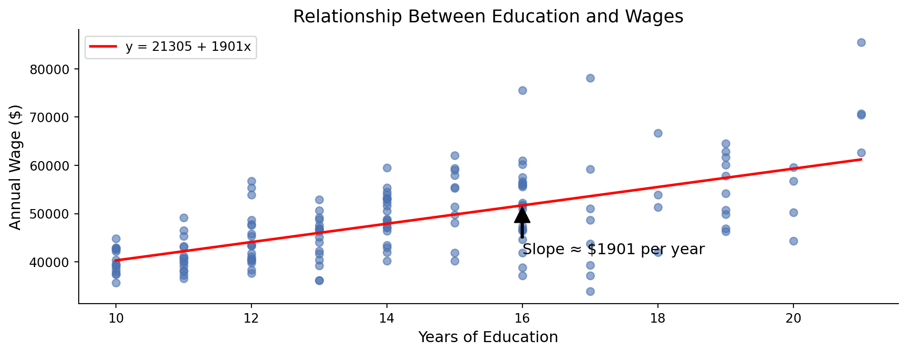
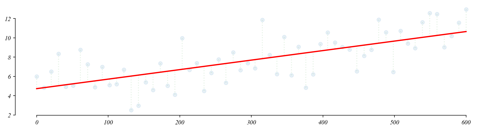
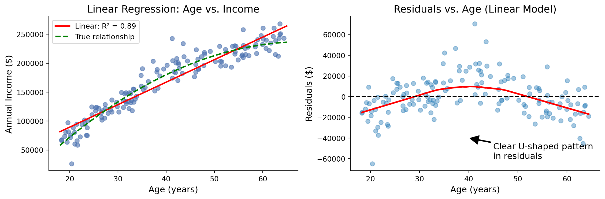
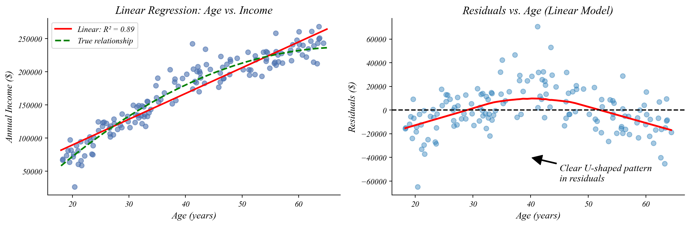
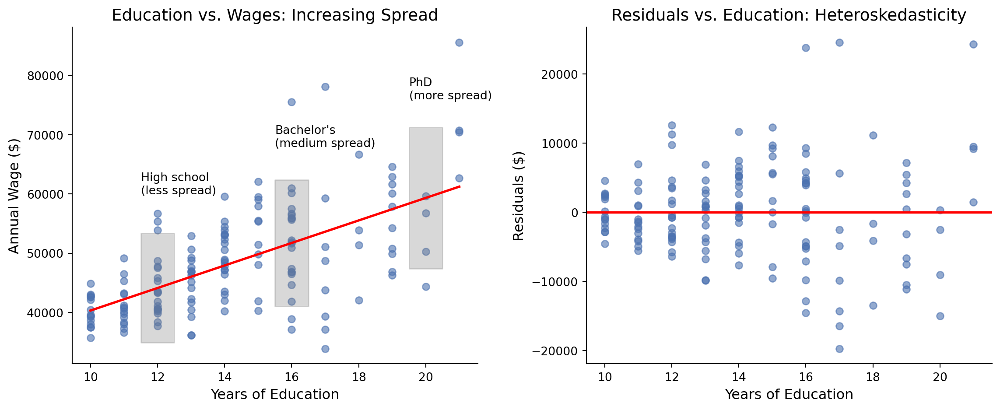
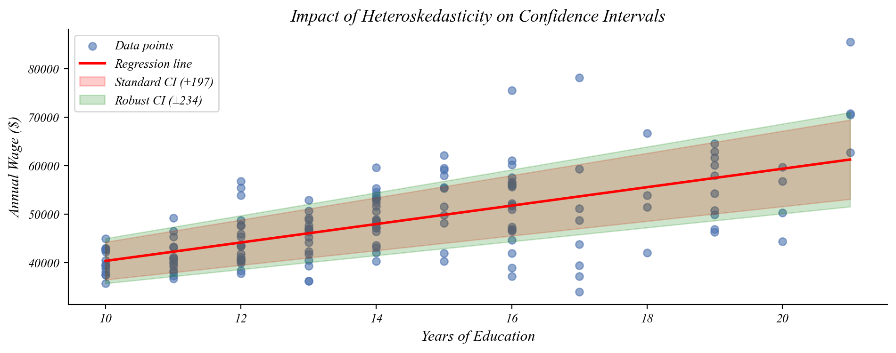
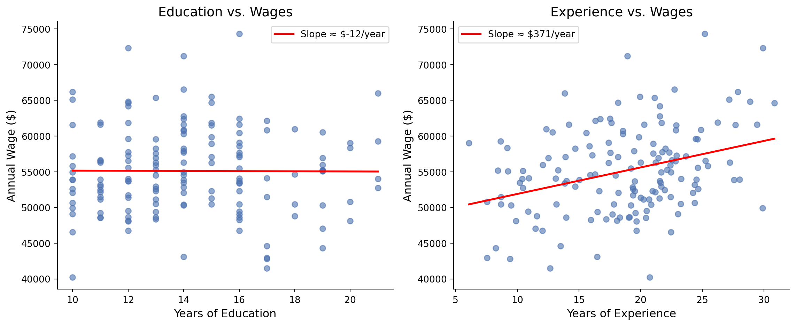
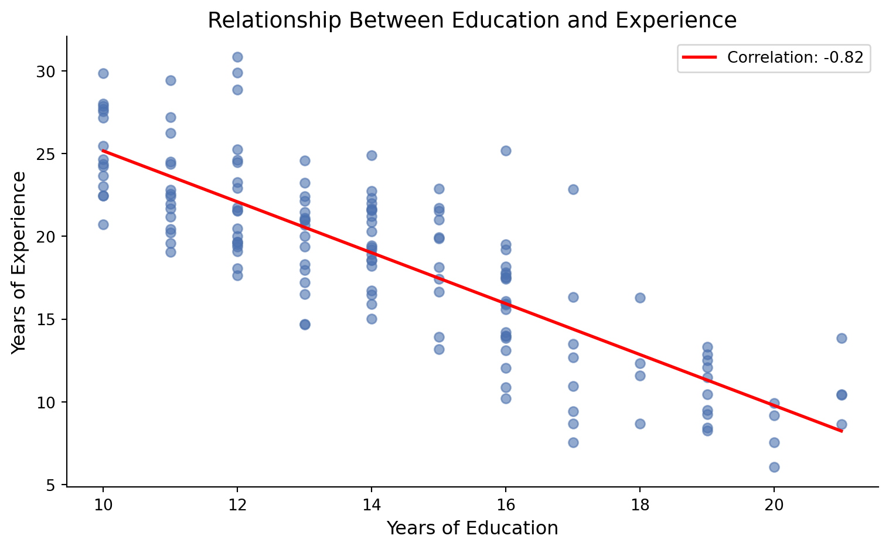
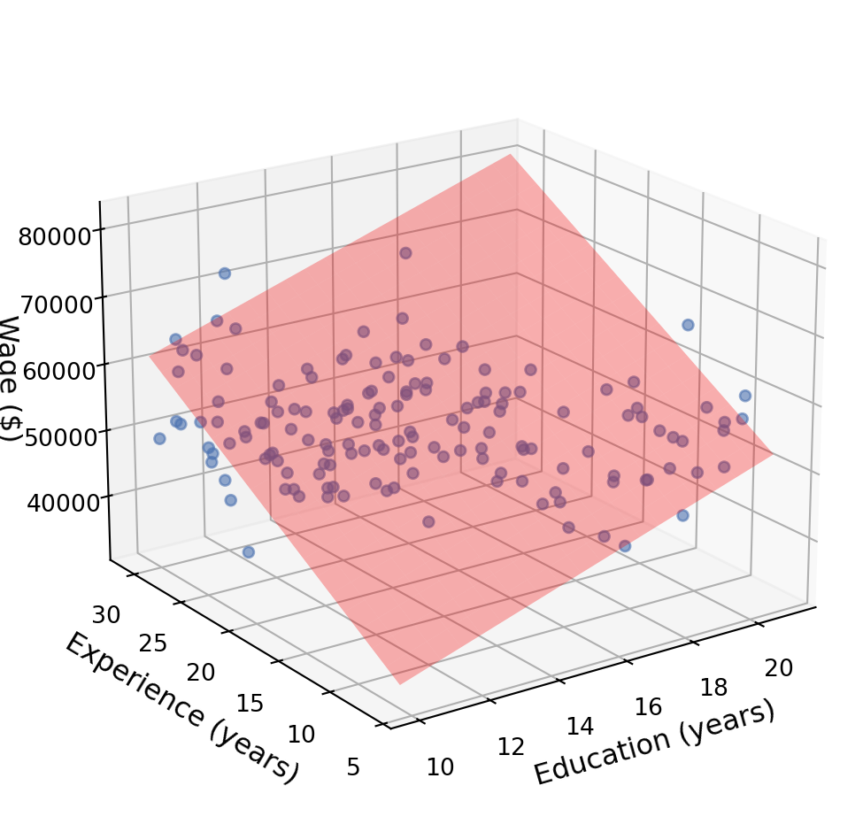

ECON 0150 | Economic Data Analysis
The economist’s data analysis pipeline.
Part 4.4 | OLS Assumptions and Multivariate Regression
OLS Assumptions
Our test results are only valid when the model assumptions are valid.
- Linearity: The relationship between X and Y is linear
- Independence: Observations are independent from each other
- Homoskedasticity: Equal error variance across all values of X
- Normality: Errors are normally distributed
Model Diagnostics: Why Check Assumptions?
Assumption violations affect our inferences
If assumptions are violated:
- Coefficient estimates may be biased
- Standard errors may be wrong
- p-values may be misleading
- Predictions may be unreliable
Example 1: Air Quality and Income
How is neighborhood income related to air quality?
Indicator (dummy) Variables
… we can easily turn numerical or categorical variables into indicator variables.
# Import stats package and load data
import statsmodels.formula.api as smf
data = pd.read_csv(file_path + "population_demographics.csv")Model Residuals
… we can directly examine the error of the model.
> this is what we call \(\varepsilon\)
Model Predictions
… we can directly examine the predictions of the model.
> this is what we call \(\hat{y}\)
Error-Prediction Plot
… we can directly observe the error according to the model estimates.
Example 2: Education and Wages
How are education and wages related?
> for each year of education, the typical increase is about $2000
> like moving one year right, we go up $2000 on average
> but clearly some people get more, some get less
Checking for Linearity
The error term should be unrelated to the fitted value.
> which one of these figures shows linearity?

> the left one is what we want to see
> residual plots should show that the model is equally wrong everywhere
What About Non-Linear Relationships?
Not everything follows a straight line

> sometimes relationships aren’t linear
> linear model misses curvature, leading to systematic errors
> check your residuals
Handling Non-Linear Relationships
Transform variables to become linear
> here, adding a squared term captures the curvature in our data
\[\text{income} = \beta_0 + \beta_1 \text{age} + \beta_2 \text{age}^2 + \varepsilon\]
instead of
\[\text{income} = \beta_0 + \beta_1 \text{age} + \varepsilon\]
> coefficient interpretations change:
- β₁ = effect of age when age = 0 (not very meaningful here)
- β₂ = how the effect of age changes as age increases
> other common transformations: log(y) ~ x or y ~ log(x) or log(y) ~ log(x)
Checking for Homoskedasticity
Residuals should be spread out the same everywhere.
> which one of these figures shows homoskedasticity?

> the left figure shows constant variability (homoskedasticity)
> the right one has increasing variability (heteroskedasticity)
> residual plots should show that the model is equally wrong everywhere
Heteroskedasticity
When the spread of residuals changes across values of X

> notice how the spread of points increases with more education
> PhD wages vary more than high school wages
Heteroskedasticity
It affects how we measure uncertainty in our estimates

> standard methods assume constant spread (homoskedasticity)
> like using the wrong ruler to measure uncertainty
> with heteroskedasticity, we need robust standard errors
> these adjust for the changing spread in our data
Handling Heteroskedasticity
Robust standard errors give more accurate measures of uncertainty
# Fit the model with robust standard errors (HC3: heteroskedastic-constant)
robust_model = smf.ols('wages ~ education', data=df).fit(cov_type='HC3')> robust standard errors give more accurate confidence intervals
> and more reliable hypothesis tests
> especially important when heteroskedasticity is pronounced
Checking for Normality
Residuals should be normally distributed

> left shows a nice bell shape (roughly normally distributed)
> right shows a skewed distribution (not normally distributed)
> by the CLT we can still use regression without this if the sample is large
Multiple Regression
Wages depend on more than just education
> education isn’t the whole story
> wages also depend on:
- Experience
- Industry
- Location
- And many other factors
> how can we handle multiple relationships at once?
Modeling Relationships Separately
What if we build a regression model for both relationships separately?

> does this mean eductation has a negative relationship with wages?
The Challenge: Related Variables
Education and experience are correlated!

> more education usually means less work experience
> if we look at one without accounting for the other, we get misleading results
Multiple Regression
We can adjust for multiple variables simultaneously.

> multiple regression gives each variable’s effect “holding others constant”
The Multiple Regression Equation
Extending the best-fitting line to multiple dimensions
Single Variable:
\[\text{Wage} = \beta_0 + \beta_1 \times \text{Education} + \epsilon\]
Multiple Variables:
\[\text{Wage} = \beta_0 + \beta_1 \times \text{Education} + \beta_2 \times \text{Experience} + \epsilon\]
Interpretation:
- \(\beta_0\) = Base wage (intercept)
- \(\beta_1\) = Effect of one more year of education, holding experience constant
- \(\beta_2\) = Effect of one more year of experience, holding education constant
Testing with Multiple Regression
We can test individual variables or groups of variables
import statsmodels.formula.api as smf
# Fit multiple regression model
model = smf.ols('wages ~ education + experience', data=data).fit()> each coefficient has its own standard error
> can test each one like before (t-test)
> or test them together (F-test)
> “Are education AND experience related to wages?”
Looking Forward
Next steps in our regression journey
Next time:
- What can go wrong with regression?
- Omitted variable bias
- Multicollinearity
- Functional form issues
- Outliers and influential observations
> understanding these challenges helps us use regression more effectively
> and interpret results with appropriate caution